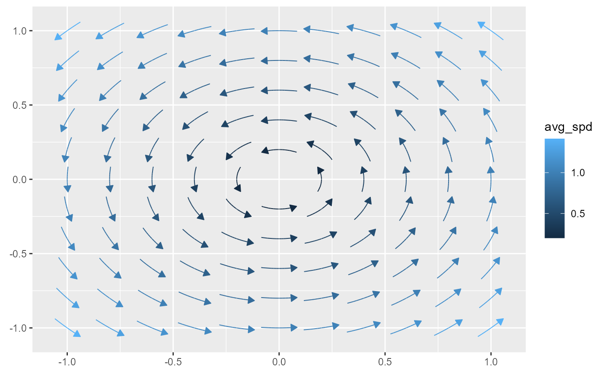

geom_stream_field() creates a ggplot2 layer that integrates a user-defined
vector field function \(f(x, y) \to (dx, dy)\) over a grid of seed points
within a specified domain \((x, y)\), producing streamlines that visualize
the flow of the vector field. This is useful for visualizing vector fields,
flow patterns, or trajectories in a variety of contexts such as fluid flows
or gradient fields.
Usage
stat_stream_field(
mapping = NULL,
data = NULL,
geom = GeomStream,
position = "identity",
...,
na.rm = FALSE,
show.legend = NA,
inherit.aes = TRUE,
fun,
xlim = NULL,
ylim = NULL,
n = 11,
args = list(),
max_it = 1000,
T = NULL,
L = NULL,
center = TRUE,
type = "stream",
normalize = TRUE,
tail_point = FALSE,
eval_point = FALSE,
grid = NULL,
method = "rk4",
arrow = grid::arrow(angle = 30, length = unit(0.02, "npc"), type = "closed")
)Arguments
- mapping
Set of aesthetic mappings created by
aes(). If specified andinherit.aes = TRUE(the default), it is combined with the default mapping at the top level of the plot. You must supplymappingif there is no plot mapping.- data
The data to be displayed in this layer. There are three options:
If
NULL, the default, the data is inherited from the plot data as specified in the call toggplot().A
data.frame, or other object, will override the plot data. All objects will be fortified to produce a data frame. Seefortify()for which variables will be created.A
functionwill be called with a single argument, the plot data. The return value must be adata.frame, and will be used as the layer data. Afunctioncan be created from aformula(e.g.~ head(.x, 10)).- geom
The geometric object used to render the streamline. Defaults to GeomStream.
- position
A position adjustment to use on the data for this layer. This can be used in various ways, including to prevent overplotting and improving the display. The
positionargument accepts the following:The result of calling a position function, such as
position_jitter(). This method allows for passing extra arguments to the position.A string naming the position adjustment. To give the position as a string, strip the function name of the
position_prefix. For example, to useposition_jitter(), give the position as"jitter".For more information and other ways to specify the position, see the layer position documentation.
- ...
Other arguments passed to
ggplot2::layer()and the underlying geometry/stat.- na.rm
If
FALSE, the default, missing values are removed with a warning. IfTRUE, missing values are silently removed.- show.legend
logical. Should this layer be included in the legends?
NA, the default, includes if any aesthetics are mapped.FALSEnever includes, andTRUEalways includes. It can also be a named logical vector to finely select the aesthetics to display.- inherit.aes
If
FALSE, overrides the default aesthetics, rather than combining with them. This is most useful for helper functions that define both data and aesthetics and shouldn't inherit behaviour from the default plot specification, e.g.borders().- fun
A function of two variables,
fun(x, y), returning a two-element vector \((dx, dy)\). This defines the local "flow" direction at any point in the domain.- xlim, ylim
Numeric vectors of length two specifying the domain limits in the \(x\)- and \(y\)-directions, respectively. Defaults to \(c(-1, 1)\) if not provided.
- n
Integer or two-element numeric vector. Grid resolution specifying the number of seed points along each axis. Defaults to
11, resulting in an \(11 \times 11\) grid.- args
List of additional arguments passed on to the function defined by
fun.- max_it
Integer. Maximum number of integration steps per streamline. Defaults to
1000.- T
Numeric. Maximum integration time for each streamline. When
normalize = FALSE, the integration runs until timeTis reached. Defaults toNULL, in which case a default value of1is used when needed.- L
Numeric. Maximum arc length for each streamline. When
normalize = TRUE, the integration is halted once the cumulative arc length reachesL. Defaults toNULL, in which case a suitable default is computed from the grid spacing.- center
Logical. If
TRUE(default), centers the seed points or the resulting streamlines so that the original (x, y) becomes the midpoint.- type
Character. Either
"stream"(default) or"vector"."stream"computes a full streamline by integrating in both directions (whencenter = TRUE)."vector"computes a single vector representing the field at the seed point.
- normalize
Logical. If
TRUE(default), streamlines are normalized based on grid spacing, using theLparameter to control maximum arc length. IfFALSE, streamlines are computed for a fixed time determined by theTparameter.- tail_point
Logical. If
TRUE, draws a point at the tail (starting point) of each streamline. Defaults toFALSE.- eval_point
Logical. If
TRUE, a point is drawn at the evaluation point where the gradient was computed. Default isFALSE.- grid
A data frame containing precomputed grid points for seed placement. If
NULL(default), a regular Cartesian grid is generated based onxlim,ylim, andn.- method
Character. Integration method, e.g.,
"rk4"for Runge-Kutta 4 or"euler"for Euler's method. Defaults to"rk4".- arrow
A
grid::arrow()specification for adding arrowheads to the streamline. By default, a closed arrow with a 30° angle and a length of0.02npc is used.
Value
A ggplot2 layer that computes and renders streamlines over the specified domain, optionally with arrowheads and tail points.
Details
The streamlines are generated by numerically integrating the vector
field defined by fun(x, y). The integration halts either when the
cumulative arc length reaches L (if normalize = TRUE) or when the
integration time reaches T (if normalize = FALSE). The computed
streamlines are then passed to GeomStream for rendering.
See Also
StatStreamField for the underlying statistical transformation.
GeomStream for the geometry that renders the resulting paths.
ggplot2::geom_path as the base geometry on which GeomStream is built.
Examples
f <- function(u) c(-u[2], u[1])
# the basic usage involves you providing a fun, xlim, and ylim
ggplot() + geom_stream_field(fun = f, xlim = c(-1,1), ylim = c(-1,1))

# if unspecified, xlim and ylim default to c(-1,1). we use this in what
# follows to focus on other parts of the code
ggplot() + geom_stream_field(fun = f)
 ggplot() + geom_stream_field(fun = f, center = FALSE)
ggplot() + geom_stream_field(fun = f, center = FALSE)
 ggplot() + geom_stream_field(fun = f, normalize = FALSE)
ggplot() + geom_stream_field(fun = f, normalize = FALSE)
 ggplot() + geom_stream_field(fun = f, normalize = FALSE, center = FALSE)
ggplot() + geom_stream_field(fun = f, normalize = FALSE, center = FALSE)
 # run systems until specified lengths
ggplot() + geom_stream_field(fun = f, normalize = TRUE, L = .08)
# run systems until specified lengths
ggplot() + geom_stream_field(fun = f, normalize = TRUE, L = .08)
 # run systems for specified times
ggplot() + geom_stream_field(fun = f, normalize = FALSE, T = .1)
# run systems for specified times
ggplot() + geom_stream_field(fun = f, normalize = FALSE, T = .1)
 # tail and eval points
ggplot() + geom_stream_field(fun = f, tail_point = TRUE)
# tail and eval points
ggplot() + geom_stream_field(fun = f, tail_point = TRUE)
 ggplot() + geom_stream_field(fun = f, eval_point = TRUE)
ggplot() + geom_stream_field(fun = f, eval_point = TRUE)
 f <- efield_maker()
ggplot() + geom_stream_field(fun = f, xlim = c(-2,2), ylim = c(-2,2))
f <- efield_maker()
ggplot() + geom_stream_field(fun = f, xlim = c(-2,2), ylim = c(-2,2))
 ggplot() +
geom_stream_field(fun = f, xlim = c(-2,2), ylim = c(-2,2)) +
scale_color_viridis_c(trans = "log10") +
coord_equal()
ggplot() +
geom_stream_field(fun = f, xlim = c(-2,2), ylim = c(-2,2)) +
scale_color_viridis_c(trans = "log10") +
coord_equal()
 f <- function(u) u
ggplot() + geom_stream_field(fun = f, xlim = c(-1,1), ylim = c(-1,1))
f <- function(u) u
ggplot() + geom_stream_field(fun = f, xlim = c(-1,1), ylim = c(-1,1))
 f <- function(u) c(2,1)
ggplot() + geom_stream_field(fun = f, xlim = c(-1,1), ylim = c(-1,1))
f <- function(u) c(2,1)
ggplot() + geom_stream_field(fun = f, xlim = c(-1,1), ylim = c(-1,1))
 # bug here with alpha
ggplot() +
geom_stream_field(fun = f, aes(alpha = after_stat(t)), xlim = c(-2,2), ylim = c(-2,2)) +
scale_alpha(range = c(0,1))
# bug here with alpha
ggplot() +
geom_stream_field(fun = f, aes(alpha = after_stat(t)), xlim = c(-2,2), ylim = c(-2,2)) +
scale_alpha(range = c(0,1))
 ggplot() +
geom_stream_field(
fun = f, xlim = c(-1,1), ylim = c(-1,1),
linewidth = .75, arrow = arrow(length = unit(0.015, "npc"))
)
ggplot() +
geom_stream_field(
fun = f, xlim = c(-1,1), ylim = c(-1,1),
linewidth = .75, arrow = arrow(length = unit(0.015, "npc"))
)
 # Generate a hexagonal grid
hex_lattice <- generate_hexagonal_lattice(xlim = c(-5, 5), ylim = c(-5, 5), d = 1)
#> Error in generate_hexagonal_lattice(xlim = c(-5, 5), ylim = c(-5, 5), d = 1): could not find function "generate_hexagonal_lattice"
# Use the hexagonal grid in geom_stream_field
ggplot() + geom_stream_field(fun = f, grid = hex_lattice)
#> Error in layer(stat = stat, geom = GeomStream, data = data, mapping = mapping, position = position, show.legend = show.legend, inherit.aes = inherit.aes, params = list(fun = fun, xlim = xlim, ylim = ylim, n = n, args = args, method = method, na.rm = na.rm, max_it = max_it, T = T, L = L, center = center, type = type, normalize = normalize, tail_point = tail_point, eval_point = eval_point, arrow = arrow, ...)): object 'hex_lattice' not found
# neat examples
f <- function(u) {
x <- u[1]; y <- u[2]
c(y, y*(-x^2 - 2*y^2 + 1) - x)
}
ggplot() + geom_stream_field(fun = f, xlim = c(-2,2), ylim = c(-2,2))
# Generate a hexagonal grid
hex_lattice <- generate_hexagonal_lattice(xlim = c(-5, 5), ylim = c(-5, 5), d = 1)
#> Error in generate_hexagonal_lattice(xlim = c(-5, 5), ylim = c(-5, 5), d = 1): could not find function "generate_hexagonal_lattice"
# Use the hexagonal grid in geom_stream_field
ggplot() + geom_stream_field(fun = f, grid = hex_lattice)
#> Error in layer(stat = stat, geom = GeomStream, data = data, mapping = mapping, position = position, show.legend = show.legend, inherit.aes = inherit.aes, params = list(fun = fun, xlim = xlim, ylim = ylim, n = n, args = args, method = method, na.rm = na.rm, max_it = max_it, T = T, L = L, center = center, type = type, normalize = normalize, tail_point = tail_point, eval_point = eval_point, arrow = arrow, ...)): object 'hex_lattice' not found
# neat examples
f <- function(u) {
x <- u[1]; y <- u[2]
c(y, y*(-x^2 - 2*y^2 + 1) - x)
}
ggplot() + geom_stream_field(fun = f, xlim = c(-2,2), ylim = c(-2,2))
 ggplot() + geom_stream_field(fun = f, xlim = c(-2,2), ylim = c(-2,2), type = "vector")
#> Warning: Removed 2 rows containing missing values or values outside the scale range
#> (`geom_stream()`).
ggplot() + geom_stream_field(fun = f, xlim = c(-2,2), ylim = c(-2,2), type = "vector")
#> Warning: Removed 2 rows containing missing values or values outside the scale range
#> (`geom_stream()`).
 f <- function(u) {
x <- u[1]; y <- u[2]
c(y, x - x^3)
}
ggplot() + geom_stream_field(fun = f, xlim = c(-2,2), ylim = c(-2,2))
f <- function(u) {
x <- u[1]; y <- u[2]
c(y, x - x^3)
}
ggplot() + geom_stream_field(fun = f, xlim = c(-2,2), ylim = c(-2,2))
 f <- function(u) {
x <- u[1]; y <- u[2]
c(x^2 - y^2, x^2 + y^2 - 2)
}
ggplot() + geom_stream_field(fun = f, xlim = c(-2,2), ylim = c(-2,2))
f <- function(u) {
x <- u[1]; y <- u[2]
c(x^2 - y^2, x^2 + y^2 - 2)
}
ggplot() + geom_stream_field(fun = f, xlim = c(-2,2), ylim = c(-2,2))